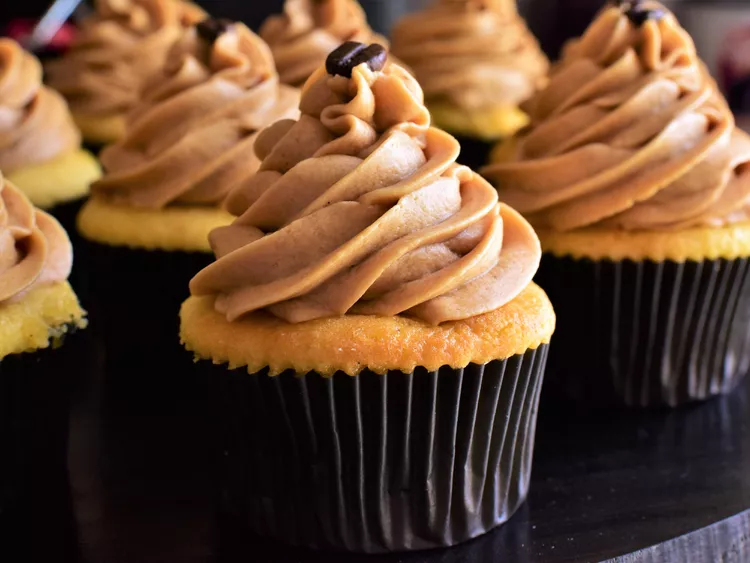

Vanilla Bean Cupcake

A plain, light sponge with a rich and fluffy vanilla whipped buttercream topping
Pairing a rich, vanilla-laden cupcake with a silky espresso frosting results in a confection that tastes like a vanilla latte in dessert form.
Ingredients:
Vanilla Bean Cupcake
- 2 cups all-purpose flour
- 2 teaspoons baking powder
- 3/4 teaspoon salt
- 1/8 teaspoon ground nutmeg
- 1 1/4 cups white sugar
- 3/4 cup unsalted butter, softened
- 3 large egg yolks, at room temperature
- 2 large eggs, at room temperature
- 2 teaspoons vanilla extract
- 1/4 teaspoon almond extract
- 1 (7-inch) vanilla bean
- 1 1/4 cups buttermilk, at room temperature
Expresso Frosting:
- 2/3 cup heavy cream
- 3 tablespoons espresso
- 1 teaspoon vanilla extract
- 1/4 teaspoon salt
- 1 1/2 cups unsalted butter, at room temperature
- 6 cups confectioners sugar